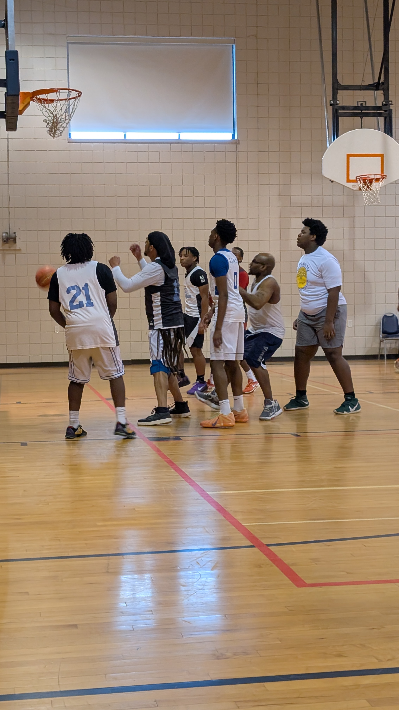
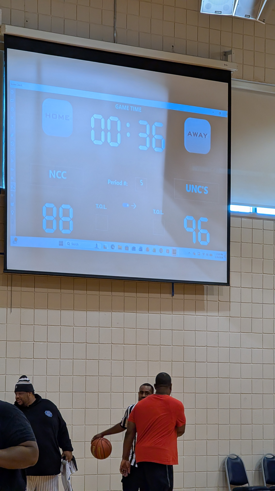

What a game. NCC Youth went toe-to-toe with UNCs in a back-and-forth battle that had everyone on their feet from tip-off to the final buzzer. This wasn't just a basketball game — it was a display of the perseverance, unity, and faith that New Creation Church instills in its young people every day.
Attacking the rim — full flight to the basket

Battling in the paint — NCC holding their ground
UNCs came out strong and built an early lead, pushing ahead 57-51 heading into the later stages. But NCC Youth didn't flinch. They chipped away, clawed back, and eventually took the lead at 81-78 — flipping the script and sending the crowd into a frenzy.
Down 6 in the second half, NCC Youth went on a 30-21 run to take a 3-point lead. That stretch showed exactly what this team is made of — resilience born from faith, teamwork rooted in fellowship, and an absolute refusal to quit. These young men didn't just play harder — they played together, lifting each other up every possession.
With the game knotted at 81-81, it was anyone's to take. UNCs found another gear in the closing minutes, pulling away to seal a 96-88 victory. The final score doesn't tell the full story — this game was contested every single possession.
.jpeg)
UNCs lead 57-51
.jpeg)
NCC takes the lead 81-78
.jpeg)
Tied at 81 — game on

Final: NCC 88, UNCs 96
Highlights from the NCC Youth vs UNCs matchup
The final score says UNCs took this one, but NCC Youth proved something on that court. This team doesn't back down. They fought back from a deficit, took the lead, and went blow-for-blow with a strong opponent until the very end. That kind of heart isn't just built in practice — it's built in prayer, in fellowship, and in trusting God through every challenge.
This program isn't just about winning games — it's about raising young men who walk in faith, compete with integrity, and support one another like brothers in Christ. Every practice, every game, every moment of adversity is an opportunity to grow — not just as athletes, but as men of God.
Proud of every single one of these young men. The score resets, but the faith, the character, and the brotherhood carry forward. That's what New Creation is about.

.jpeg)
.jpeg)